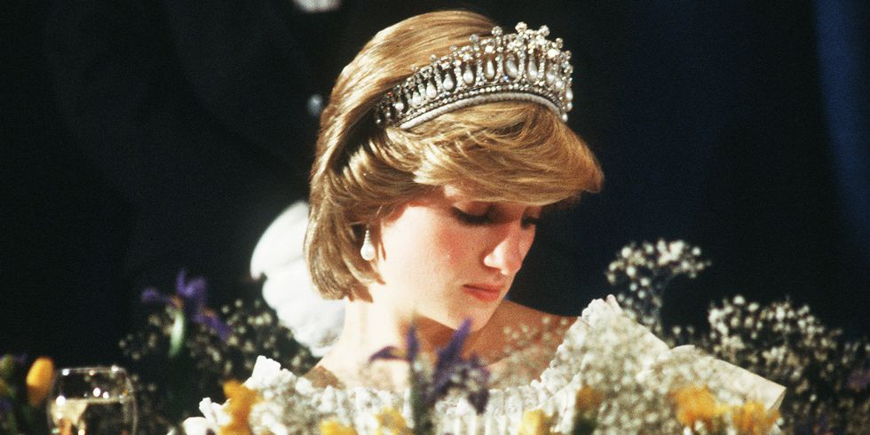
Princess
1960
1970
1980
1990
July 1, 1961
Diana Frances Spencer was the fourth of five children born to John Spencer, the 8th Earl Spencer and his first wife, Frances Ruth Roche.
1967
The Spencers separate when Diana is six years old.
1970
Diana enrolls at Riddlesworth Hall, an all-girls boarding school in Norfolk.
1973
Diana joins older sisters Jane and Sarah at West Heath Girls' School in Kent, where she shows talent in music and sports but not academics. Later, she fails her O-level exams twice, and leaves without the equivalent of a high school diploma.
1975
Diana is given the title of Lady after her grandfather dies and her father inherits the title Earl of Spencer and the Althorp estate.
1977
Diana first meets future husband Prince Charles, who at the time was dating her older sister Sarah.
1980
During a summer weekend in the country, Prince Charles notices Diana. Later that year, he takes her sailing on the royal yacht and invites her to Balmoral, his family's Scottish retreat to meet his family
January, 1981
After tabloids report a premarital liaison between Charles and Diana, Prince Philip writes a letter to his son urging him to either propose or end the relationship. Charles interprets it as an order to propose.
February 24, 1981
Charles and Diana go public with their engagement. Diana debuts her famous sapphire-and-diamond ring.
July 29, 1981
Less than a month after her 20th birthday, Diana weds Charles, 32, at St. Paul's Cathedral, which better accommodated their 2,500 guests than Westminster Abbey, the usual venue for royal weddings.
June 21, 1982
The couple's first child, Prince William Arthur Philip Louis, is born at London's St. Mary's Hospital.
March 1983
Together with Charles, Diana and 9-month-old son William embark on their first royal tour together to Australia and New Zealand.
September 15, 1984
The couple's second son, Prince Henry Charles Albert David, aka Harry, is born.
April, 1987
At the peak of homophobia and fear of AIDS, Diana shakes hands with a man suffering from the disease without gloves at London's Middlesex Hospital.
1989
During a 40th birthday party for Camilla Parker Bowles' sister, Diana dismisses her husband and confronts her rival about her ongoing affair with Charles. "I would just like you to know that I know exactly what is going on," Diana tells Camilla.
March 29, 1992
Diana's father, John Spencer, dies of a heart attack in London.
May, 1992
Journalist Andrew Morton publishes "Diana: Her True Story in Her Own Words". Morton sent written questions via Diana's friend Dr. James Colthurst, who recorded the interviews and ferried the tapes back to him.
August, 1992
Britain's Sun newspaper reveals the "Squidgygate" tapes, alleged to be from a years-old phone conversation with alleged lover James Gilby, who referred to Diana by Squidgy, a pet name, he uttered dozens of times throughout the recording.
December, 1992
Prime Minister John Major informs Parliament of the official separation of the Prince and Princess of Wales.
January, 1993
The "Camillagate" tapes surfaced, audio recordings of phone conversations between Charles and his lover, Camilla Parker Bowles.
December, 1993
Diana announces her plan to retire from public life, at least for an indefinite period, and dramatically pares down her list of charity patronages.
1995
Diana meets Dr. Hasnat Khan, the Pakistani-born cardiac surgeon overseeing her acupuncturist's postoperative care and begins a secret, two-year relationship.
November 20, 1995
BBC's newsmagazine Panorama airs Martin Bashir's bombshell interview with Diana at Kensington Palace, which had been planned and carried out in secrecy. Her most famous quote was in regards to her marriage: "Well, there were three of us in the marriage so it was a bit crowded."
August, 1996
The terms of the royal divorce are finalized. Diana is awarded a lump-sum settlement of $22.5 million in cash, as well as about $600,000 a year earmarked to maintain her private office in addition to receiving permission to continue living in their Kensington Palace apartment.
January 15, 1997
Diana walks through a minefield in war-torn Angola to support the Red Cross' call for a ban on landmines and to showcase the de-mining work being done by one of the charities she patronized.
August 30, 1997
A few months after her split with Khan, Diana and her new beau, Dodi Fayed, depart Paris' Ritz-Carlton Hotel. Their intoxicated driver, Henri Paul, races through the Pont de l'Alma tunnel in an attempt to outrun the paparazzi. Shortly after midnight, he crashes their Mercedes, killing himself and Fayed instantly. Diana is taken to the hospital.
August 31, 1997
Diana succumbs to her injuries and is pronounced dead at 4 a.m. at Paris' PItié-St. Salpêtrière Hospital at age 36.
September 6, 1997
Millions around the world watch Diana's funeral procession and service at Westminster Abbey. Later that day, her remains are transported home to her family's estate at Althorp, where she is buried.
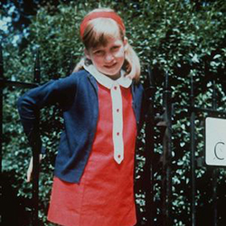
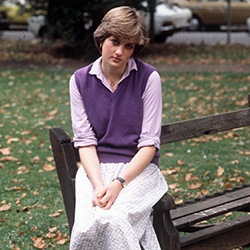
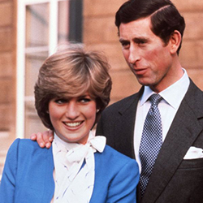
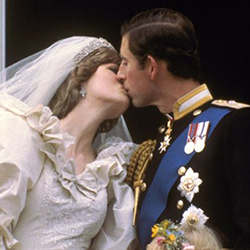
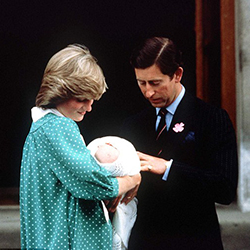
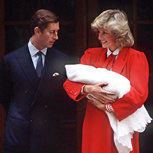
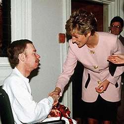
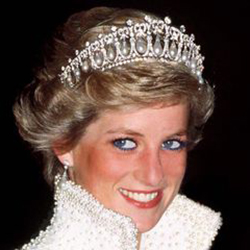
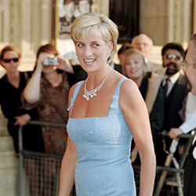
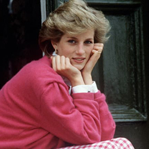
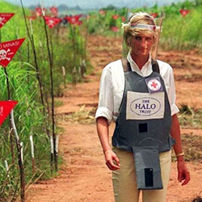
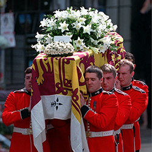